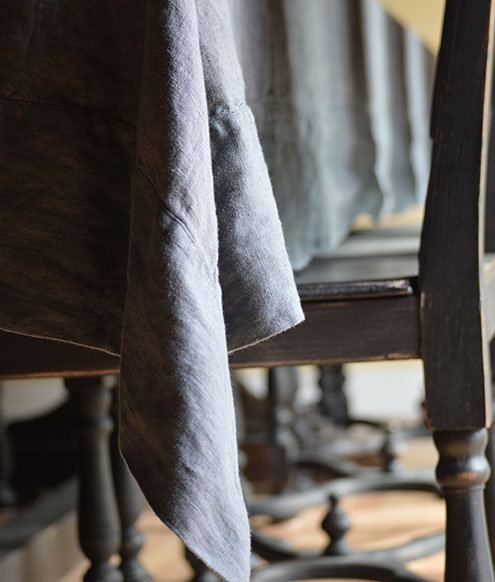
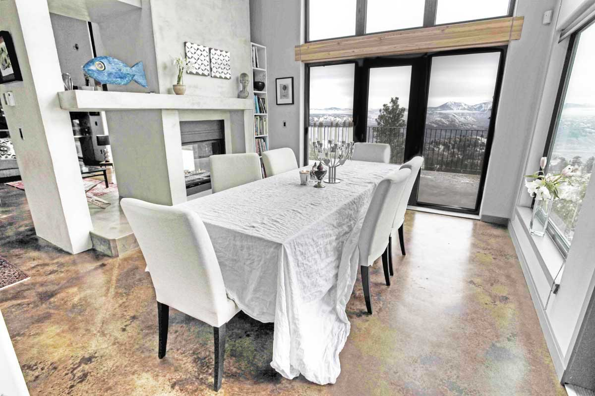
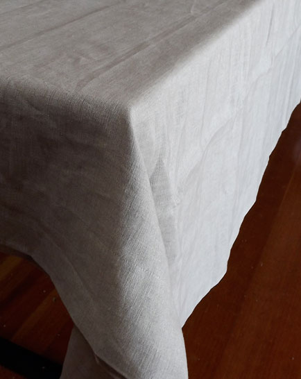
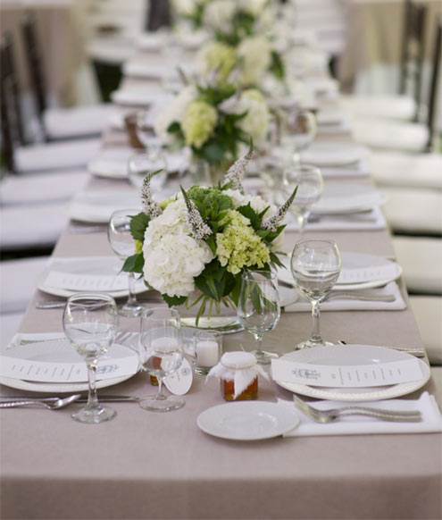
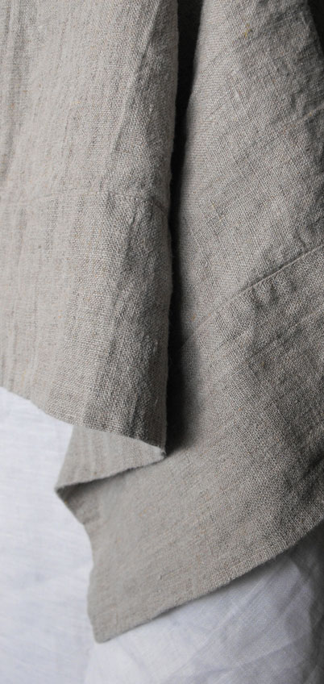
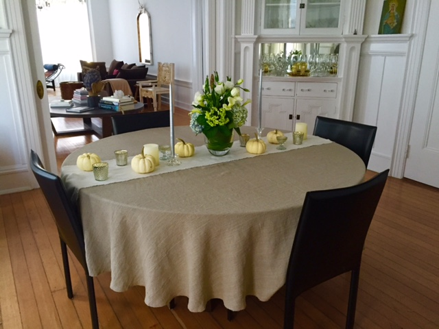

Orkney tablecloth and napkins at Kara Rosenlund's cottage in Australia
tablecloth
Orkney Natural, White, Black, Charcoal, or Indigo
square 58" wide x 58" $130
long 58" wide x 108" $160
Smooth Natural or White
small 60" wide x 60" $130
medium 72" wide x 118" $180
large 90" wide x 144" $200
The charm of Orkney is its texture, which comes from the old looms, whose maximum width is 58". The advantage of the more finely woven Smooth linen is its 118" width, so it makes a flowing, full tablecloth for virtually any size table.
Both are simple and elegant. Orkney always has deep hems, Smooth Linen can also come with the raw edge much loved by stylists, and a pintuck 3" in. Layer the two fabrics for extra finish, the smooth undercloth longer than the textured overcloth by 3" to 5" all round.
Tables vary in width and length, but the drop should not be less than 8", and generally not more than 15"– a practical length, as it is too short to sit on! 10" to 12" is usual.
For wider tables and rounds I can extend Orkney by seaming in quadrants, far smarter and more tailored than side panels – think of a hot cross bun. Round tablecloths have a stabilized raw edge rather than a hem.

Style Me Pretty shoot from Samantha: we wanted to use our surroundings as a backdrop and highlight the beauty of the season. Photography: Cmostr Photography; Location: Private Venue in New Jersey; Linen: Rough Linen

Charcoal table linens to ground and enhance your china and silverware, and let it sparkle.

Bridget, one of our community contributors, used her Smooth white linen sheet as a tablecloth. You don't have to do this - just order a Smooth white tablecloth - you can use it as a sheet as well, if you really want to.

Tricia talks about tablecloths and napkins

A Rough Linen Smooth natural linen tablecloth has style and grace.
"Dear Tricia and team, I SO LOVE my new linen! I read your website carefully before purchasing and felt I was making an informed decision. But it was all way BETTER than expected. The hand wrapped and ribboned parcels were just delightful (and it takes A LOT for me to be thrilled about packaging) and the linen itself - AMAZING! My new tablecloth was instantly on the table. Much to my happiness it was a perfect fit! No more adjusting and making do with store bought, inappropriately sized tablecloths. What I really love is the texture and colour of the orkney - natural and soothing. Just perfect for my family life."
Liz – Sydney

Width is the problem: most fabrics are 60”, so tables wider than 40” need a seamed tablecloth. My seams are invisible - well almost. My maximum width is 110”, the length is infinite. These large Orkney tablecloths are custom made to size, email me your table’s dimensions.

Besides seeing my linen displayed en masse, I love the small jars of honey, topped with small raw-edged linen squares, as their place assignments.

Jamie's Rough Linen table set and ready for guests

Incredible Orkney Tablecloth
"Tricia....I have spent (wasted) a lot of money on tablecloths until I purchased this incredible Orkney Linen Tablecloth from you. It has the most amazing feel and drape. I cannot wait to have Thanksgiving dinner and show off my tablecloth. Heck with the food.
I will be adding the tablecloth that layers underneath next.
Thanks for making such beautiful pieces." – Lisa

I love how the stabilised raw edge on Orkney round tablecloths drapes and hangs so gracefully.


{kind=link}
{kind=link}
{kind=link}
{kind=link}
{kind=link}
{kind=link}
{kind=link}